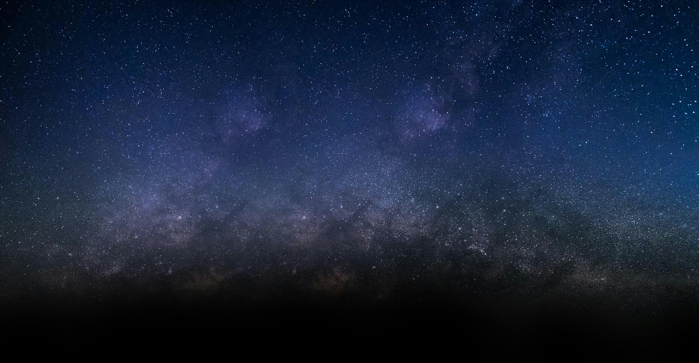

<app-toolbar>
</app-toolbar>

<button class="gilda-background-image" [routerLink]="'/homepage'">
  
</button>
<div class="main-wrapper overflow-auto-scroll">
  <router-outlet></router-outlet>
</div>
<app-pop-up></app-pop-up>
